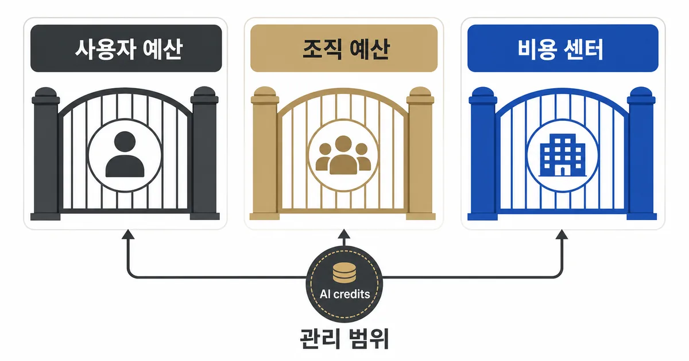
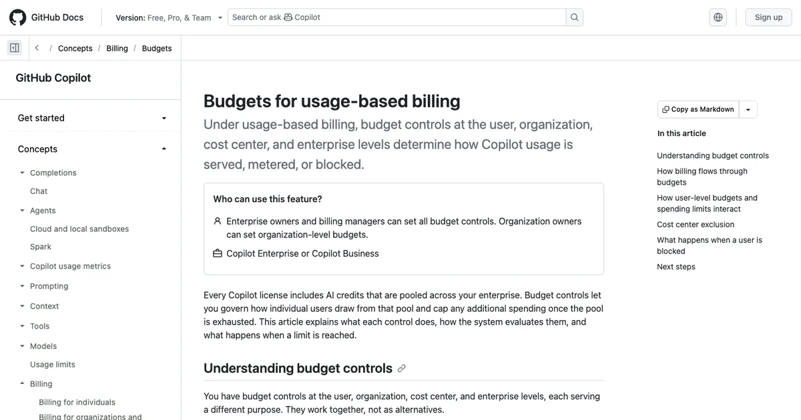

2026. 8. 6 (목) · 약 9분
월말에 Copilot 청구서를 확인하는 팀이라면, 이제 ‘지난달에 얼마나 썼나’를 보는 화면 하나만으로는 부족하다. GitHub가 Copilot Billing Preview 앱을 종료하면서 사용량·예산·비용 센터 관리는 GitHub Billing 설정으로 옮겨 갔다. 이 변화는 앱의 주소가 바뀌었다는 공지에 그치지 않는다. 누구의 AI credits가 어느 예산을 소진하는지, 알림만 받을지 실제 사용을 중지할지, 그리고 숫자가 튀었을 때 어떤 원시 자료를 내보낼지를 한 곳에서 다시 정해야 한다는 뜻이다. 특히 여러 조직과 계정을 함께 쓰는 개발팀은 ‘대시보드를 본다’와 ‘비용이 커지기 전에 행동한다’를 분리해서 설계할 필요가 있다.
오늘의 핵심뉴스
심층 분석 · GitHub Changelog · 2026. 8. 5
GitHub, Copilot Billing Preview 앱 종료 후 Billing 설정으로 비용 관리 통합
GitHub는 Copilot Billing Preview 앱을 종료하고 AI usage, 예산, 사용자별 예산, 비용 센터, 사용량 보고서와 Billing API로 Copilot 비용을 확인·관리하도록 안내했다. 이번 변화의 핵심은 청구서 조회를 넘어 실제 비용 제어의 범위와 동작을 다시 점검하는 데 있다.
사라진 것은 미리보기 앱이고, 사라지지 않은 것은 비용 책임이다
GitHub는 8월 3일 Copilot Billing Preview 앱을 종료했다. 이 앱은 사용량 기반 과금으로 옮겨 가는 동안 청구서를 미리 살펴보는 역할을 했지만, GitHub는 이제 기본 Billing 설정이 사용자별 예산, 비용 센터, AI credits 배분처럼 앱의 보고서보다 넓은 정보를 제공한다고 설명한다. 따라서 기존 앱을 열어 보던 습관을 새 화면으로 옮기는 것만으로는 충분하지 않다. 팀은 사용량을 보는 사람, 예산을 정하는 사람, 한도를 넘겼을 때 작업 중단을 승인하는 사람이 같은지부터 확인해야 한다.
먼저 GitHub Billing의 AI usage 화면에서 사용량을 그룹화·필터·내보내기 할 수 있다. 이 화면은 ‘이번 달 비용이 얼마인가’를 확인하는 출발점이다. 하지만 비용이 늘어난 뒤 원인을 보는 기능과, 늘기 전에 경계를 거는 기능은 다르다. 예산은 후자를 위한 도구이며, 사용량 보고서와 Billing API는 이상치를 더 세밀하게 되짚을 때 쓴다. 조회 화면 하나를 예산 통제라고 부르면, 누가 무엇을 멈출 수 있는지가 흐려진다.

예산 범위는 비용을 보는 단위가 아니라 행동을 정하는 단위다
GitHub Docs는 사용량 기반 Copilot에서 사용자, 조직, 비용 센터, 엔터프라이즈 수준의 예산 제어가 AI credits 사용 방식에 영향을 준다고 설명한다. 사용자별 예산은 Copilot AI credits에만 지원되며, 기본으로 적용하는 보편 예산과 특정 사용자에게 우선하는 개별 예산이 있다. 즉 사용량이 많은 몇 사람을 따로 관찰하고 싶다면 팀 전체 예산을 더 잘게 쪼개는 대신, 어떤 예산이 우선하는지까지 이해해야 한다.
| 범위 | 먼저 답할 질문 | 적합한 상황 |
|---|---|---|
| 사용자 | 특정 사용자의 AI credits를 따로 추적하거나 제한할 필요가 있는가 | 고사용량 역할을 따로 관리할 때 |
| 조직 | 같은 조직 라이선스의 추가 사용 비용을 한 경계에서 볼 것인가 | 팀별 월간 책임을 정할 때 |
| 비용 센터 | 사업·프로젝트별로 비용을 구분해야 하는가 | 엔터프라이즈의 부서별 비용 배분 |
| 엔터프라이즈 | 여러 조직의 총 지출을 어디서 통제할 것인가 | 중앙 FinOps 또는 플랫폼 팀 |
이 표는 특정 범위가 항상 더 낫다는 뜻이 아니다. 팀이 한 조직 안에서 공용 기능을 시험한다면 조직 예산으로 시작하는 편이 단순할 수 있다. 반대로 여러 제품 팀의 사용량을 하나의 청구서에서 나눠 봐야 한다면 비용 센터가 필요하다. 중요한 것은 예산 이름을 많이 만드는 일이 아니라, 예산 경계를 넘었을 때 연락받을 사람과 다음 행동을 미리 정하는 일이다.
‘예산을 만들면 멈춘다’고 가정하면 생기는 빈틈
GitHub의 일반 예산 문서는 대부분의 라이선스 기반 제품에서 예산이 사용량을 막기보다 알림을 제공한다고 구분한다. 반면 Copilot AI credits처럼 계량되는 제품은 예산 한도에 도달했을 때 사용을 중지하도록 설정할 수 있다. Copilot 사용량 기반 예산 문서도 조직·비용 센터·엔터프라이즈 예산의 ‘한도 도달 시 사용 중지’가 기본으로 켜져 있지 않다고 명시한다. 그러므로 예산을 만든 직후에는 알림 수신 주소, 임계치, 중지 옵션, 예외를 승인할 담당자를 함께 확인해야 한다.

첫 청구 주기에는 이전 사용량이 예산에 섞이지 않는다
새 예산을 만든 첫 청구 주기에는 생성 시점 이후의 계량 사용량만 계산에 들어간다. GitHub는 이 때문에 한도 도달 시 중지를 선택해도 첫 주기에는 예산을 초과할 수 있다고 안내한다. 그래서 예산을 월말에 급히 만드는 팀은 ‘이번 달 누적 비용’과 ‘예산 생성 뒤의 비용’을 같은 숫자로 해석하면 안 된다. 첫 달에는 AI usage와 사용량 보고서를 함께 보고, 다음 청구 주기부터 예산 알림이 예상한 시점에 오는지 확인하는 편이 안전하다.
이번 주에 한 번만 점검할 세 가지
- AI usage 화면에서 현재 청구 주기의 사용량을 사용자·조직 또는 비용 센터 기준으로 한 번 필터링한다.
- 예산 하나를 골라 알림만 보낼지, 한도 도달 때 사용 중지를 허용할지와 담당자를 문서에 적는다.
- 새 예산이라면 생성 이전 사용량이 첫 청구 주기의 예산 계산에 포함되지 않는다는 점을 비용 보고에 표시한다.
커뮤니티 논의에는 사용량 기반 과금 전환 뒤 예상 비용과 실제 청구 방식이 낯설었다는 사례가 남아 있다. 이 반응은 개별 비용을 일반화하는 자료는 아니지만, 미리보기 숫자를 한 번 보는 일만으로는 운영 기준이 되지 않는다는 맥락을 준다. 가장 재현 가능한 기준은 공개 문서의 범위·기본값을 확인하고, 자신의 조직에서 알림과 중지 조건이 실제로 동작하는지 작은 예산 하나로 검증하는 것이다.
참고 자료와 함께 읽을 글
이번 변화의 범위는 GitHub Changelog에서, 예산의 적용 순서와 중지 조건은 GitHub Docs에서 확인했다. 비용을 자동화로 다룰수록 사용량 조회·권한·승인 경계를 함께 설계해야 한다.
참고한 자료
Copilot Billing Preview 앱의 종료는 청구서를 덜 보게 되는 변화가 아니라, 비용 관리의 단위를 더 정교하게 나누라는 신호에 가깝다. 먼저 AI usage 화면에서 지난 사용량을 확인하고, 그다음 조직 전체·비용 센터·사용자 중 실제 의사결정을 할 수 있는 범위에 예산을 연결하자. 마지막으로 그 예산이 알림인지 중지인지와, 첫 달의 누적 사용량이 예산 계산에서 어떻게 보이는지를 문서로 남겨야 한다. 그래야 예상치 못한 사용량이 생겨도 모델이나 사람을 탓하기 전에 어느 경계가 비어 있었는지 확인할 수 있다. 이번 청구 주기 안에 팀의 Copilot 비용 담당자 한 명이 예산 알림 메일을 실제로 받는지부터 확인해 두면 다음 달 비교가 훨씬 쉬워진다.